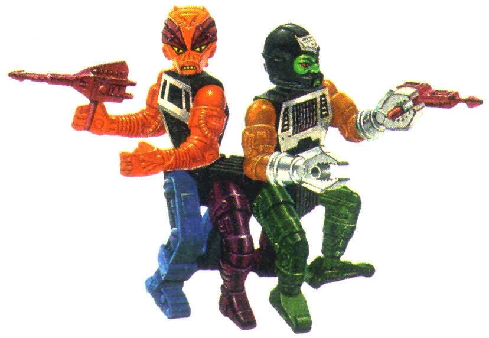

Back in the 1980s I used to play with He-Man dolls. My favourite came pre-decomposed: Modulok and Multi-bot. Both were collections of interchangeable heads, torsos and limbs - alien parts for Modulok; robot parts for Multi-bot - that could joined up in more ways that a young boy could count. The two characters could be combined, creating oddly cute orgosynthetic monstrosities: HR Giger by Mattel circling Lego’s IP, as it were.
Nevertheless, if my father asked me if I was enjoying playing with my He-Man dolls, I’d be quick to correct him. “They’re not dolls!”, I’d tell him. “They’re action figures!” If my father then asked, “What’s the difference?”, I think I’d be ready to confabulate a distinction, usually related to the functionality - “press this button and it can talk or punch, or talk to who it’s punching” - or its durability. Given MultiModulokbot starts off broken up, and is intended to be torn limb from torso from head from limb, I may have had a point on the latter, but more through luck than judgement.
I was thinking about the doll/action figure distinction recently after realising that, over the last few weeks, I’d been tricked into watching a couple of soap operas, and worse still occasionally even enjoying doing so. The first of these was Billions, which I initially watched hoping it would be to Hedge Funds what The Wire was to Street Gangs. With a top investigative journalist as one of its executive producers, and an assault course of legal and financial jargon to contend with from the first minute, I thought maybe it might at least reach the navel of the Wire’s mantel. But by around the fourth series I realised fictionalised socioethnographic investigation was never what Billions wanted to be, and if it had ever played with the idea of saying something meaningful about the ultrawealthy,1 it had no interest in this any more. No. Billions, I’d realised, was quite happy being something like Dynasty with F-bombs, and C-bombs, and BDSM, strung together mainly around a kind of baroque storyline involving a preposterous love triangle, or maybe a love chevron, or maybe a love human centipede. In Billions, various ludicrous hypermasculine archetypes, sometimes played by women or non-binary actors, act as if every decision they make is life-or-death, that they’re one step away from destroying each other, vanquishing their foes, and achieving ultimate victory. Yet there they are, two years later, three years later, all in one piece, none-the-worse, still acting as if they’re still dancing on an existential precipice, and that maybe this scheme is the one that will finally seal the deal. (It doesn’t.)
More recently, I’ve found myself watching Loudermilk, about a former music journalist and recovering alcoholic who’s also a straight-talking foul-mouthed misanthropist with a heart of gold. Secondary characters call Loudermilk Loundermilk repeatedly, as if to remind viewers what show they’re watching, and attractive young women seem to find him appealing for no obvious reason. Much of the show involves men in recovery talking to each other in a room, hiding their love and concern for each other inside superficially cruel and callous insults. Plot twists abound - an affair here, a visit from a long-lost relative there - but ultimately it’s still the same set of characters, sitting in a room, loving to hate each other, and hating that they love each other.


Series like Billions and Loudermilk would never admit to being soap operas because, just as the young boy who played with action figures would never have played with dolls, so many viewers of sweary soap operas would never watch soap operas.
Footnotes
I was thinking of shoehorning a reference to the characters of Billions thinking that they’re the “masters of the universe”, but are also ultimately no more realistic than those portrayed in He-Man, but decided against it!↩︎